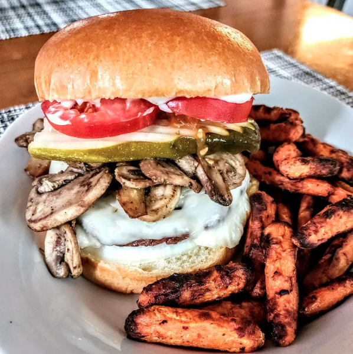

<!DOCTYPE html>
<html lang="en">
    <head>
        <meta charset="utf-8">
        <title>The Twenty Dollar Burger Recipe</title>
    </head>
</html>

<body>

    <h1>The Twenty Dollar Burger</h1>
    

    <h2>What is The Twenty Dollar Burger?</h2>
    <p>The first comment I got about this burger was, 'I would pay twenty dollars for this...WOW!' I serve these on a whole wheat bun, with blue cheese and horseradish mayo.</p>

    <h2>Ingredients</h2>
    
    <ul>
        <li>1 tablespoon butter</li>
        <li>1 small red onion, diced</li>
        <li>1 tablespoon minced garlic</li>
        <li>¾ cup plain lowfat yogurt</li>
        <li>1 teaspoon salt</li>
        <li>1 teaspoon black pepper</li>
        <li>1 teaspoon cayenne pepper</li>
        <li>1 teaspoon mustard powder</li>
        <li>1 teaspoon garlic powder</li>
        <li>1 tablespoon horseradish</li>
        <li>1 tablespoon chopped fresh parsley</li>
        <li>1 tablespoon chopped fresh cilantro</li>
        <li>2 tablespoons Worcestershire sauce</li>
        <li>2 tablespoons low-sodium soy sauce</li>
        <li>1 tablespoon chipotle-flavored hot sauce</li>
        <li>2 pounds lean ground beef</li>
    </ul>

    <h2>Recipe Steps</h2>

    <ol>
        <li>Melt butter in a skillet over medium heat. Add red onion and garlic; cook and stir until the onion softens and begins to turn brown, about 8 minutes. 
        Scrape onion into a large bowl. Add yogurt, salt, black pepper, cayenne pepper, mustard powder, garlic powder, horseradish, parsley, cilantro, Worcestershire sauce, 
        soy sauce, and hot sauce. Whisk together until smooth. Mix in the ground beef until evenly blended with the yogurt mixture. Cover, and refrigerate at least 1 hour.</li>
        <li>Preheat an outdoor grill for medium-high heat. Shape mixture in to 6 patties 1/2 inch thick, and 5 inches across.</li>
        <li>Grill burgers until no longer pink in the center, about 6 minutes per side.</li>
    </ol>
</body>

</html>